Recipe
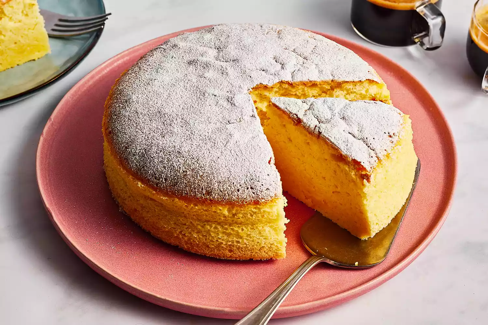Japanese cheesecake, also known as Japanese cotton cake, soufflé cheesecake, or jiggly cake, is a bouncy and light confection with similar ingredients to regular cheesecake, but of lighter and fluffier texture. The main difference is that Japanese cheesecake has no crust and the egg whites are first beaten to soft peaks before being incorporated into the final batter. Similar to chiffon cake but even airier, yet surprisingly sturdy, this sweet import has become a home baker hit. Impressive on its own, the jiggly cake needs no bells or whistles to earn new fans. A quick dust with powdered sugar is all you need to present this beautiful dessert.
- 5 tablespoons unsalted butter, divided
- 1 cup cream cheese
- 6 tablespoons milk
- 3/4 cup all-purpose flour
- 3 tablespoons cornstarch
- 6 large egg yolks
- 1/4 cup sugar
- 1/4 teaspoon salt
- 3 tablespoons lemon juice
- 6 large egg whites
- 1/2 teaspoon cream of tartar
- 1/2 cup granulated sugar
- 6 tablespoons confectioners' sugar
Ingredients
For the Cream Cheese Batter:
For the Meringue:
For the Garnish:
- 1 Gather the ingredients. 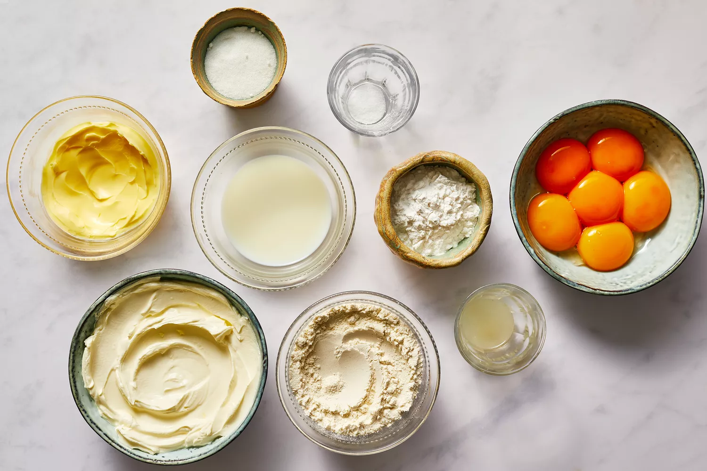
- 2 Preheat the oven to 325 F. Using 1 tablespoon of butter, generously grease a 8-inch springform cake pan. 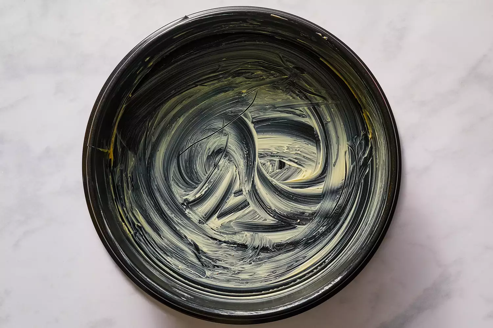
- 3 Tightly wrap the outside bottom and up the sides of the pan with 2 to 3 sheets of aluminum foil to prevent water from leaking into the pan during baking. Set aside. 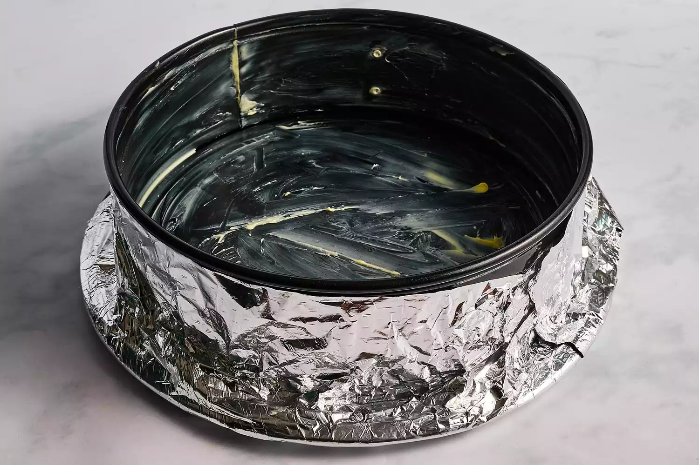
- 4 In a small saucepan, bring 1 cup of water to a boil. Combine the remaining butter with the cream cheese and milk in a metal or glass bowl. Place bowl over the sauce pan with the boiling water, creating a double boiler. Slowly soften the ingredients over simmering water until melted, about 5 minutes. 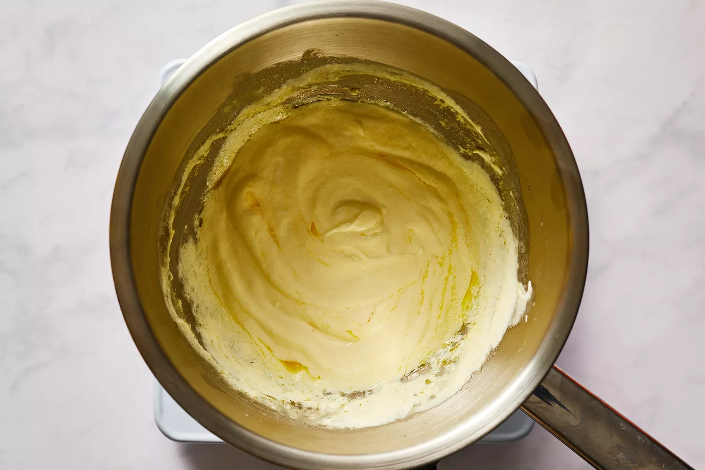
-
5
Transfer the batter to the bowl of a stand mixer and whisk lightly
on medium speed to make sure there are no lumps. Alternatively, use
a hand mixer.

- 6 In a separate bowl, sift the flour with the cornstarch. 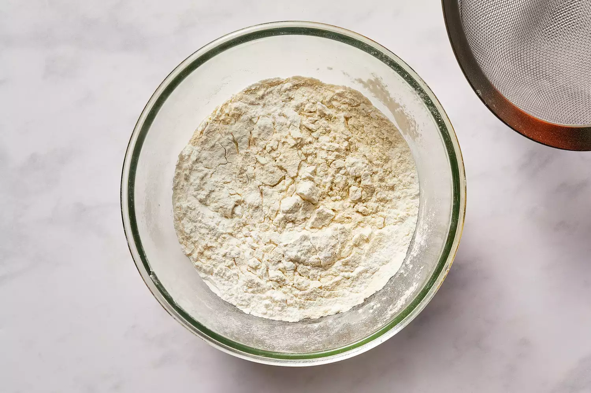
- 7 Gradually add the flour and cornstarch mixture into the cream cheese batter. Whisk until incorporated. 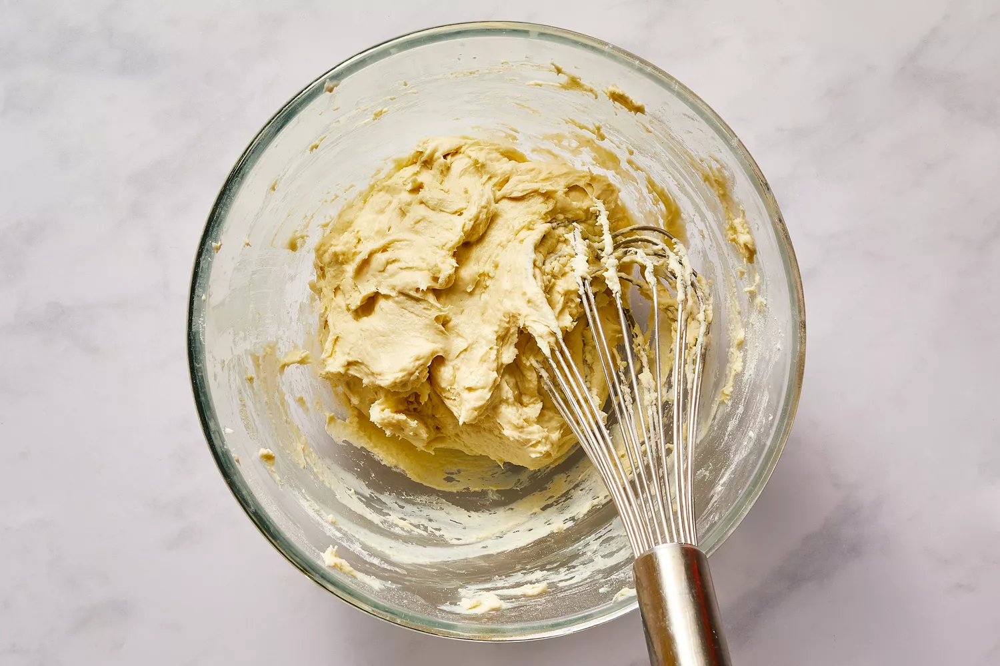
-
8
Add the egg yolks and sugar into the batter and whisk until smooth.

- 9 Add the salt and lemon juice and lightly whisk to mix together. Set aside while you prepare the meringue. 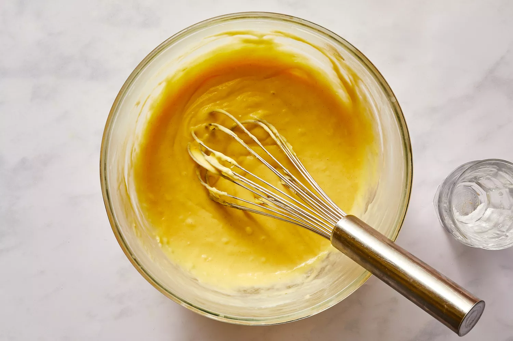
-
1
Gather the meringue ingredients.

-
2
In a very clean and dry bowl, whip the egg whites on medium speed
using a stand or hand mixer until the egg whites are starting to
turn opaque; don't beat them at high speed.

- 3 Once opaque, add the cream of tartar all at once and continue mixing. The meringue will start to turn bright white and glossy. 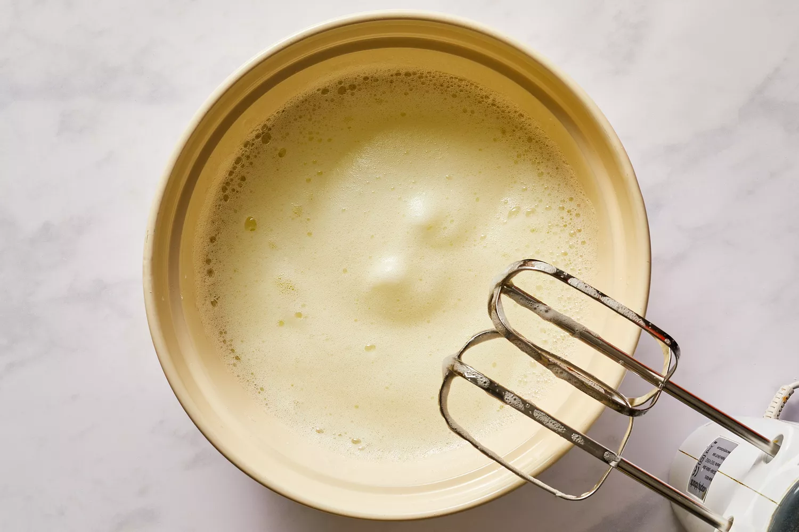
- 4 Gradually add the sugar, a tablespoon at a time. whisking well until thoroughly mixed. The meringue will soon be thick, firm, and shiny. When you lift the beaters from the mixture, it should stand in firm peaks. 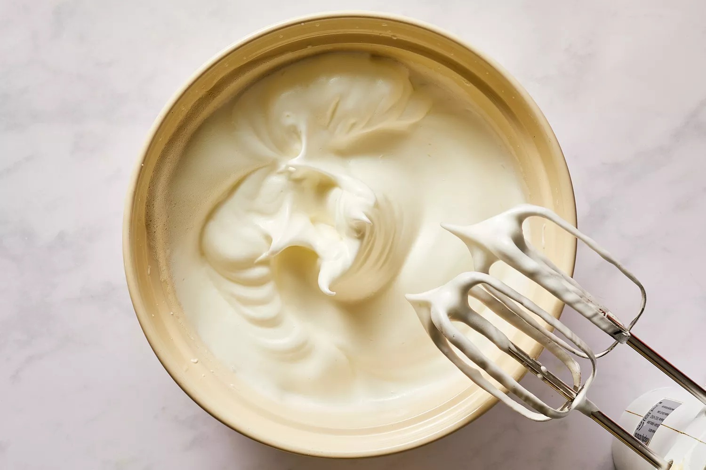
- 5 Using a large spoon, add 1/3 of the meringue to the cream cheese batter and mix quickly to loosen the mixture. Add another 1/3 and use the spoon to gently fold in the meringue, preserving as much air as possible in the batter. Repeat with the remaining meringue to form a light, airy cake batter. 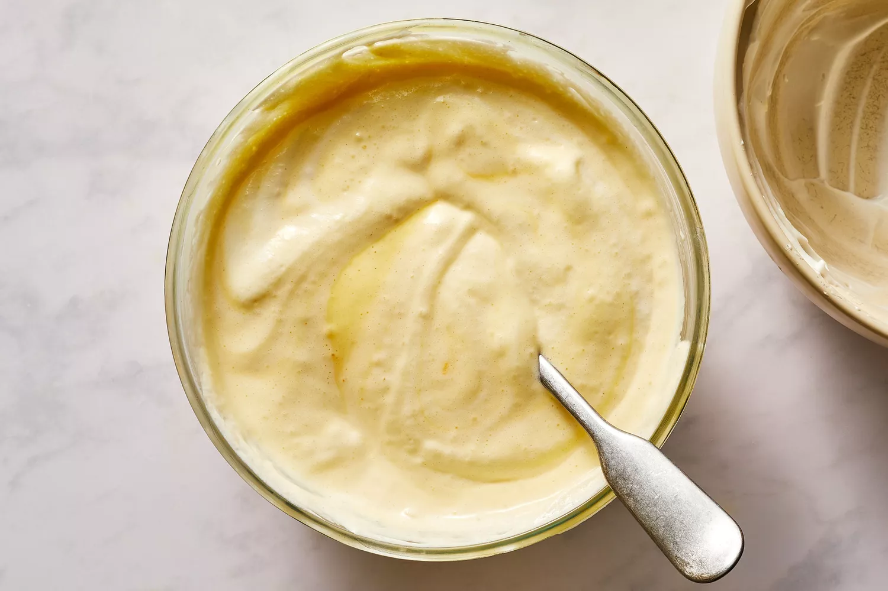
- 1 Boil 8 cups of water in a kettle or medium pan. 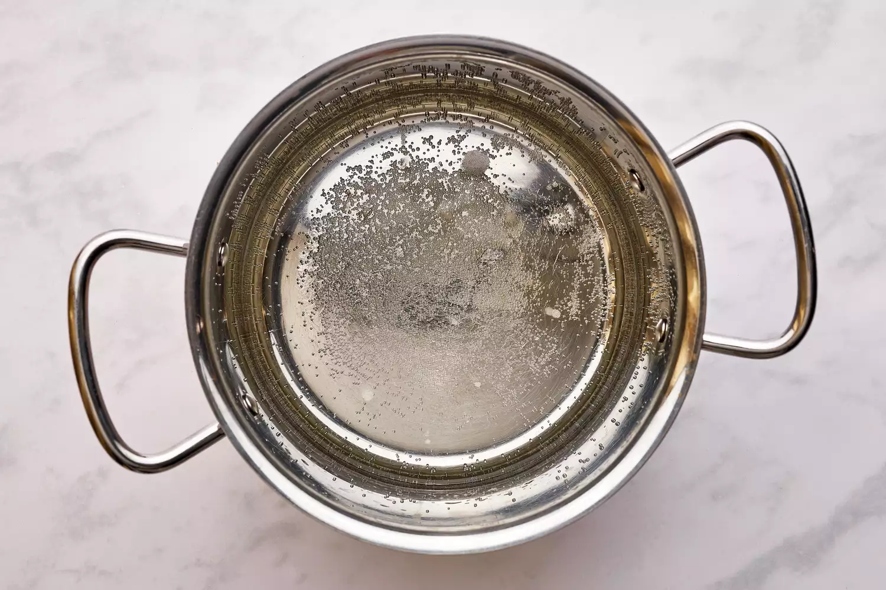
- 2 Slowly pour the batter into the prepared pan and gently level the batter with the back of a spoon or with an offset spatula. Carefully lift up the cake pan about 6 inches from the work surface and drop it back down to release any trapped air bubbles. 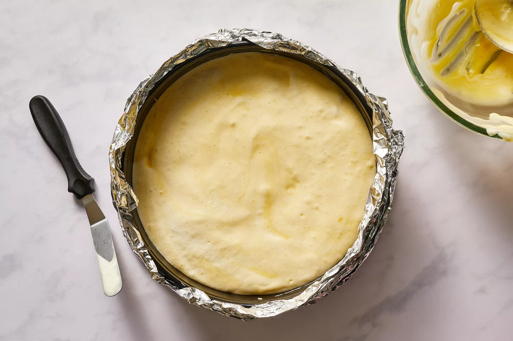
- 3 Place a deep roasting pan onto the middle rack of the preheated oven, put the cake pan in the center of the roasting pan, and pour the boiling water into the roasting pan so it reaches halfway up the cake pan. The bain-marie will help to gently cook the cake. 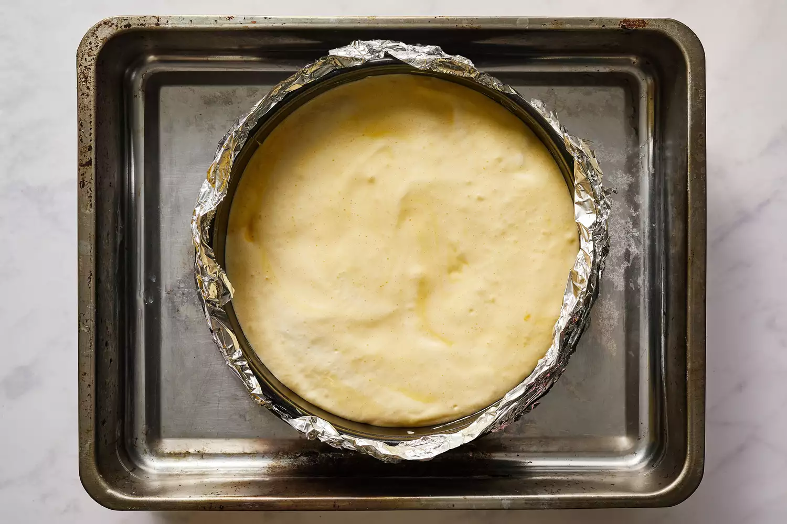
- 4 Bake for 1 hour. Turn off the oven and leave the cheesecake in the oven, with the door closed, for an additional 45 minutes. Open the oven door and leave the cake inside for 15 minutes to gently lower the temperature of the cake and prevent it from collapsing. 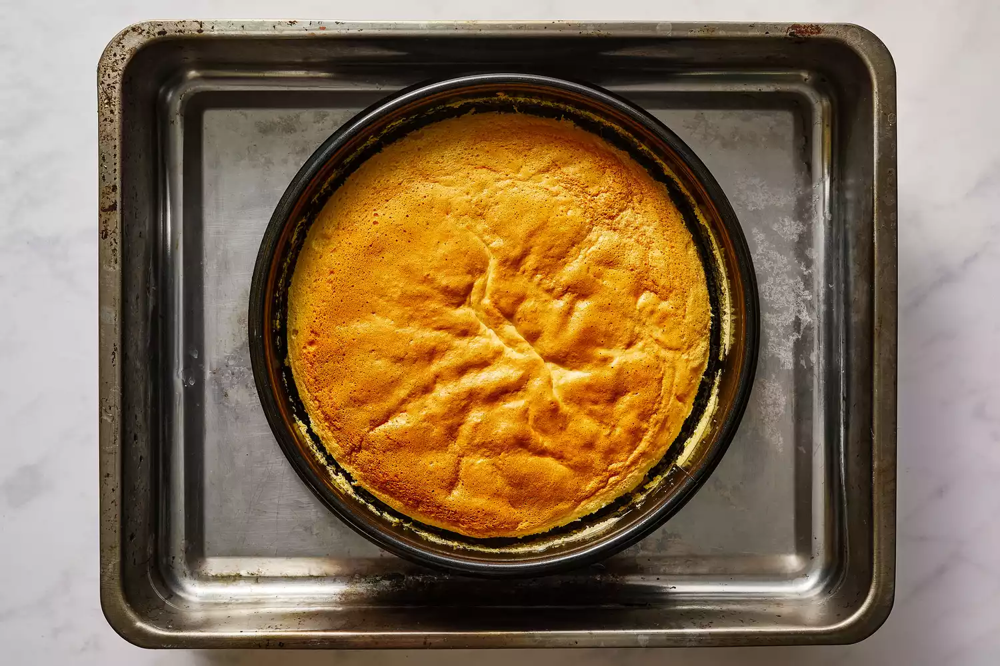
- 5 Take the cheesecake out of the oven, place it on a cooling rack, and leave it to cool completely. 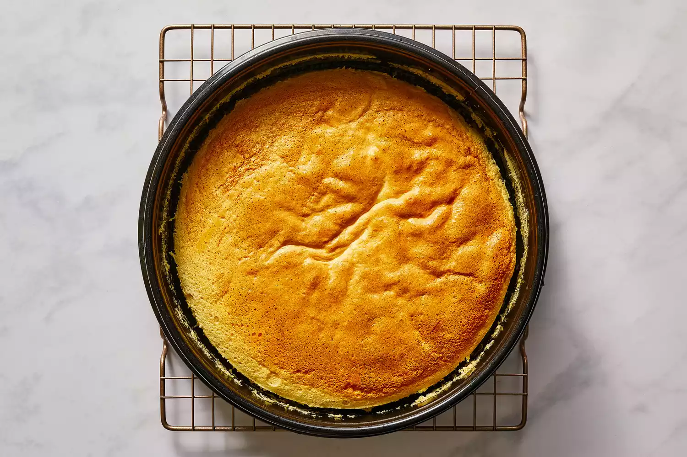
- 6 Once the cake is cool, unmold and serve dusted with the powdered sugar. The cheesecake can be placed in an airtight container and will keep for 24 hours in the refrigerator.